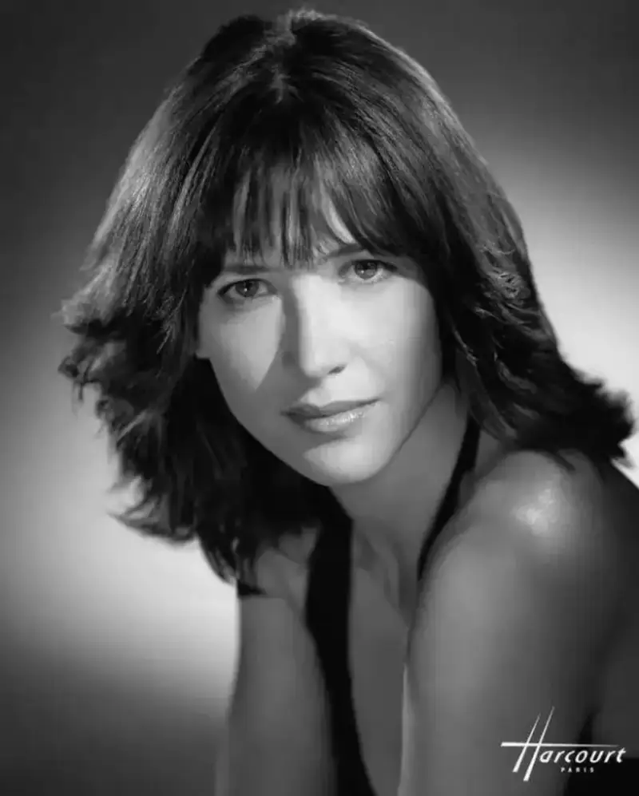
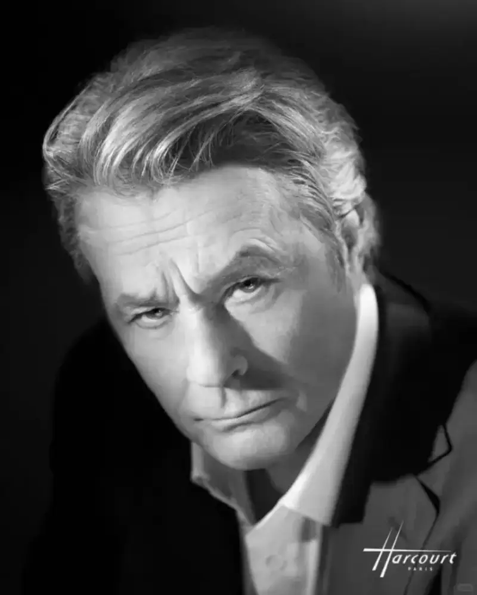
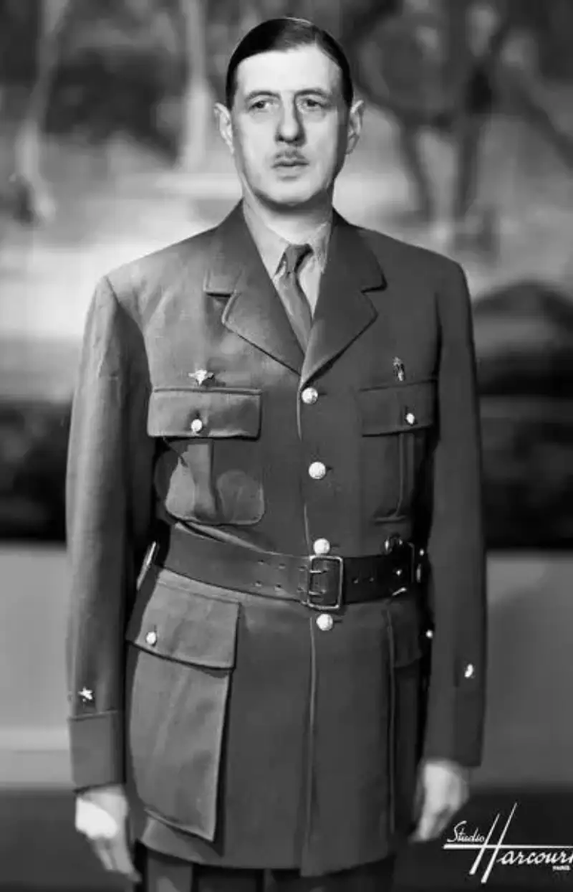
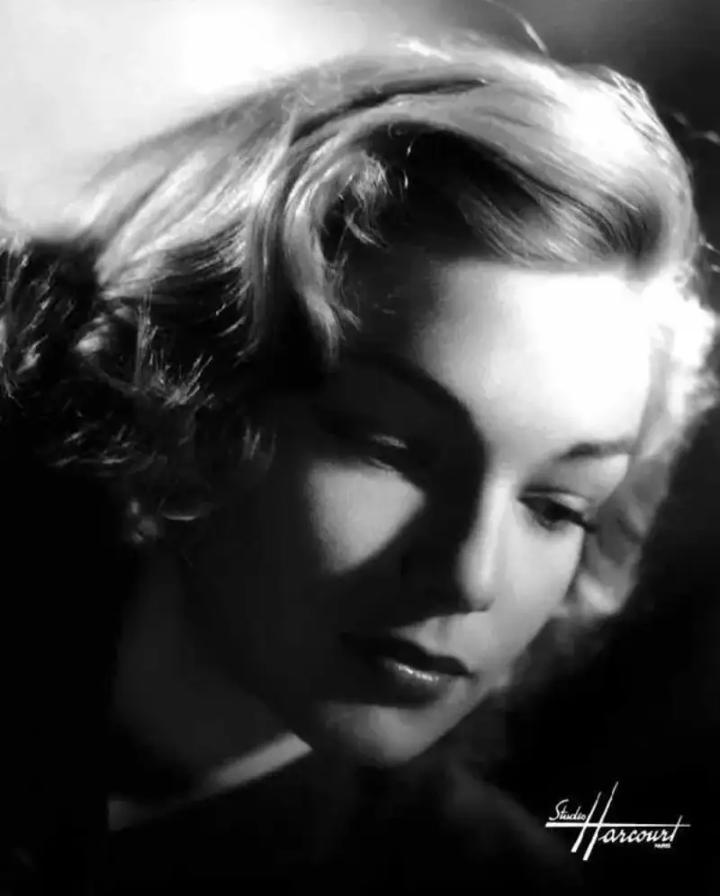
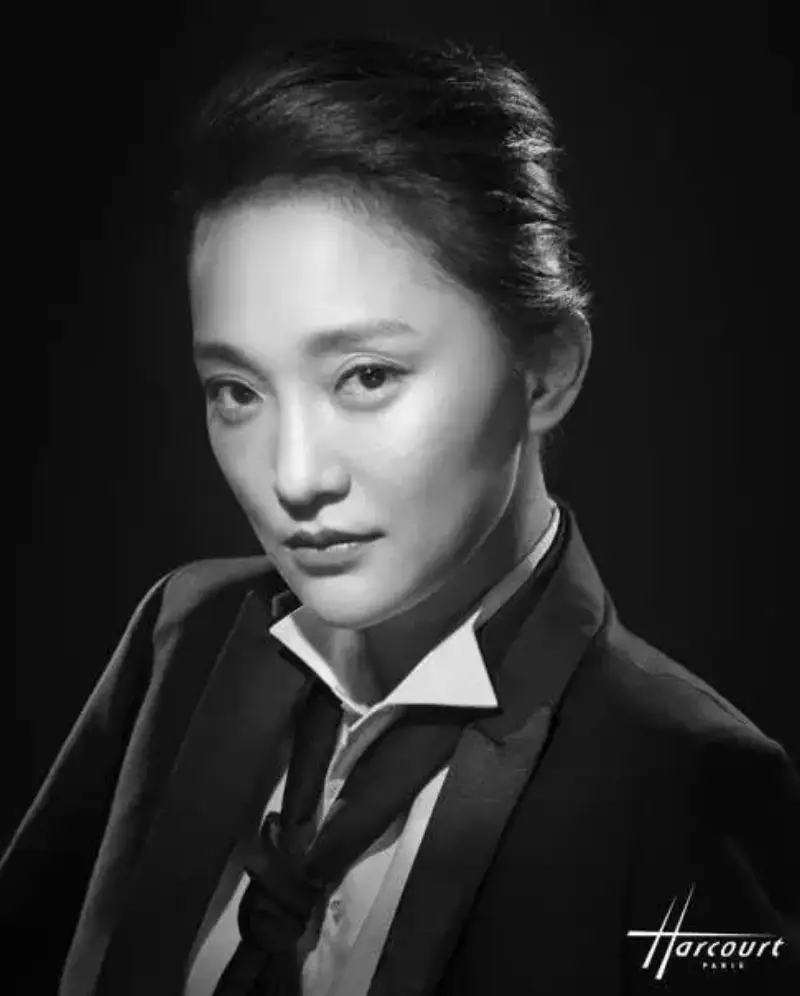

Published: 2024-05-14
Source link: https://www.cnphotos.net/academy/show-171.html
This year marks the 60th anniversary of diplomatic relations between China and France. Cultural exchange between the two countries has reached a new peak. At this special time, French culture and French taste are once again the focus of the Chinese public. Among France's art houses stands a legendary photo studio with 90 years of history, Yargu. With its unique light-and-shadow charm and outstanding art, it has become an essential part of cultural exchange between China and France.

Recently, the world-famous star Sophie Marceau appeared at a China-France dinner. With her elegant bearing and charming smile, she once again showed the world the undying charm of the French Rose. The widely celebrated portrait of Sophie Marceau was made by Yargu Studio. This portrait not only shows the beauty of Sophie Marceau, but also highlights Yargu's distinct vision and skill in portrait photography.

Yargu Studio sits in the heart of Paris and is a legendary name in light-and-shadow portraiture. Here, every portrait is a one-of-a-kind work of art, and it carries the skill and style of the photographer. Yargu has long studied light for portraits and has a deep history. They are skilled at shaping a person with light to make the subject look dimensional, beautiful, and distinct. They are known as sculptors of light.

This pursuit of perfection and the classic Made-in-France quality drew many elite and famous people to Yargu. From Sarah Bernhardt, the greatest actress in French history, to Coco Chanel, the most influential fashion icon of the 20th century; from the political leader General de Gaulle to the literary masters Hugo and Balzac. These famous people all left an eternal moment at Yargu. These portraits record their image and story, and they show the unique charm of French culture and art.

It is worth noting that a single photo at Yargu costs as much as 2000 euros (about 20,000 RMB each). So it is called the Hermes of portraiture. This price is not only the value of a photo. It is also a recognition of Yargu's skill and style. Here, every portrait is a work of art worth keeping forever.

Through the portraits of famous people made at Yargu, we can feel the culture and taste of that golden age. These portraits are witnesses to history, and they are witnesses to the friendship between China and France.
At this special time of the 60th anniversary, let us walk into Yargu, this mysterious art house, and feel its unique charm and the craftsmanship behind it. Through these precious portraits, let us look back at Paris in that golden age and feel the unique charm of French culture and art. At the same time, let us look forward to future cooperation and growth between China and France in cultural exchange, and push the friendship deeper.